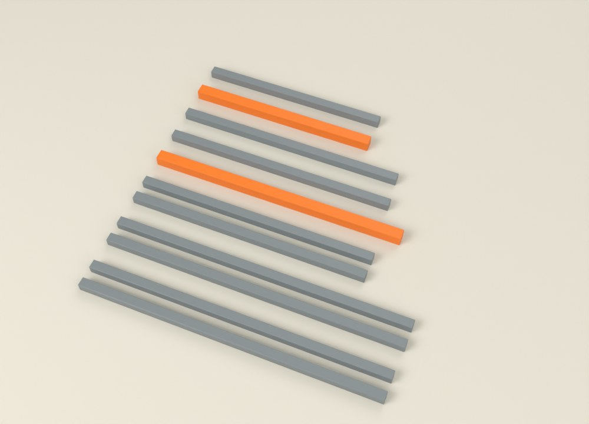

1
Parçaları kes

A1 · 643 mm · 2 adetA2 · 564 mmA3 · 508 mmB1 · 647 mm · 2 adetB2 · 420 mmB3 · 420 mmS1 · 525 mm · 2 adetS2 · 514 mm- 20'lik profilden 11 parça, 25'lik profilden 2 parça (turuncular) kes.
- Dört ayağın (A1 ve B1) yere basan ucunu yaklaşık 45° eğik kes; öbür uçlar düz.
Dikkat Aynı boydaki iki parçayı üst üste koy, boyları tam aynı olsun. Bir milimetre fark sandalyeyi sallar.